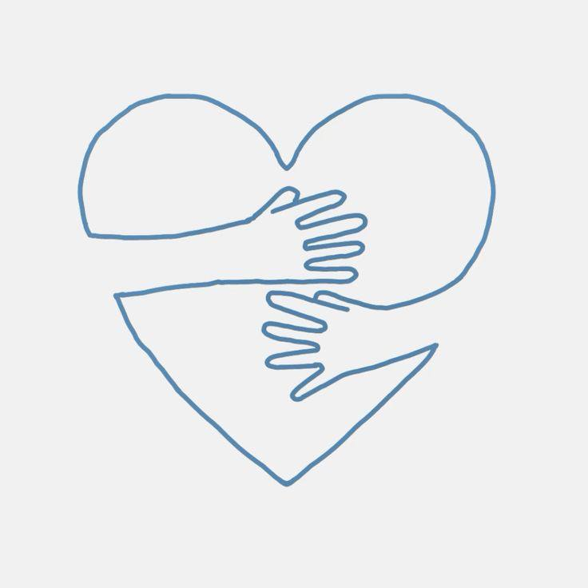
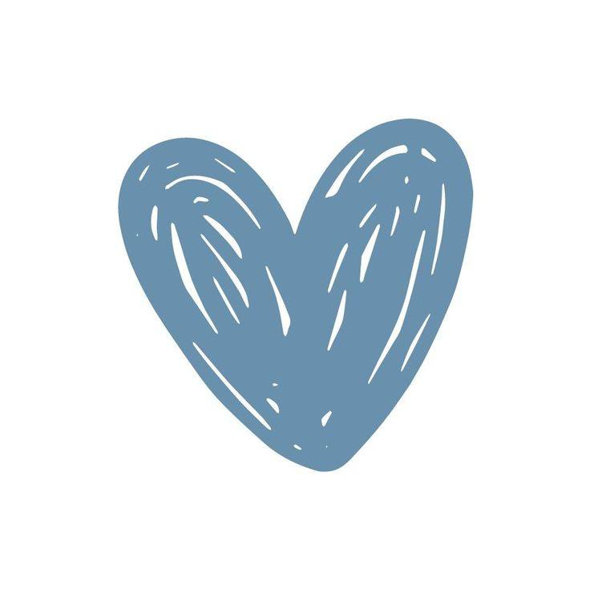

Коли ми тільки починали шлях нашого фонду, у нас була лише ідея та велике бажання допомагати. Ми часто запитували себе: "Чи вистачить у нас сил?". Сьогодні, дивлячись на результати 2024, 2025 та вже початку 2026 року, ми точно знаємо відповідь: наших сил вистачає, бо ми не самі.
Благодійність-це не лише про сухі цифри у фінансових звітах. Це, перш за все, про неймовірну синергію людей, які готові ділитися теплом у найтемніші часи.
Для нас "партнер"-це не офіційний статус у документі. Це кожен, хто підставив плече:
Коли ви допомагаєте нам пальним або донатом на медикаменти, ви даруєте нам дещо цінніше за речі-ви даруєте час та віру.
Завдяки вашій оперативності ми встигаємо допомогти там, де кожна хвилина на вагу золота.
Коли волонтер знає, що вантаж, який він розвантажує, зібрали сотні небайдужих людей-у нього відкривається друге дихання.
Ми часто кажемо, що назва нашого фонду обрана не випадково. Одна іскра не може зігріти місто, але вона може запалити багаття. Ви-ті самі люди, які не дають цьому вогню згаснути.
Кожна ваша гривня, добра порада чи репост у соцмережах-це внесок у велику спільну перемогу добра.

Читати далі